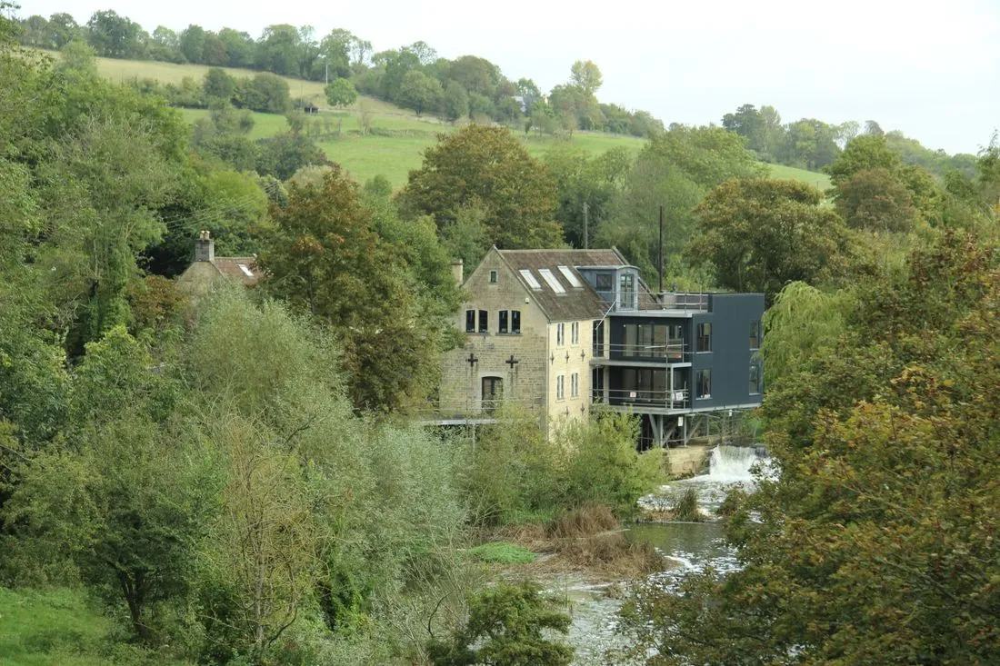

The site, Fife. Position is approximate.
Brief
Convert a listed mill into affordable workspace without erasing its character.
Approach
We kept every stone we could, inserted a slim oak structure inside and added one glass-roofed street that runs the length of the mill.
Outcome
All eleven studios were let before opening day, and the old waterwheel turns again.